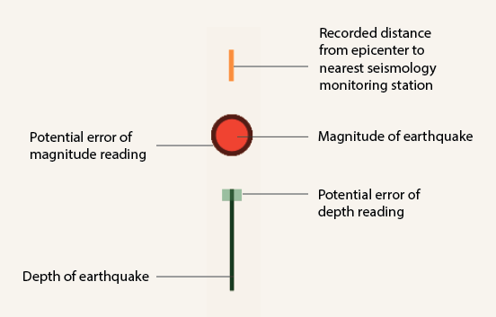

Explore the map below to see earthquakes that occured in the span of a day
along with the seismic monitoring stations located around the world. The diagram
below illustrates the magnitude, depth and depth error of the earthquake, and is
ordered by its distance to the nearest seismic monitoring station.

Earthquakes in a Day